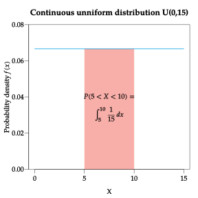
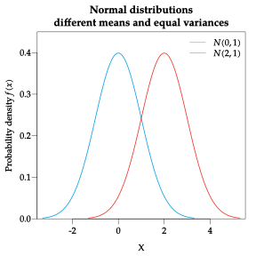
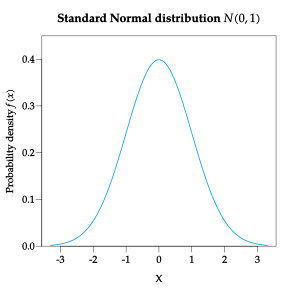
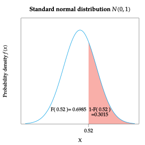

Continuous Random Variables Probability distribution of a continuous random variable Continuous random variables, unlike discrete random variables, can take any value in a real interval. Thus the range of a continuous random variables is infinite and uncountable. Such a density of values makes impossible to compute the probability for each one of them, and therefore, it’s not possible to define a probabilistic model trough a probability function like with discrete random variables. Besides, usually the measurement of continuous random variable is limited by the precision of the measuring instrument. For instance, when somebody says that is 1.68 meters tall, his or her true height is no exactly 1.68 meters, because the precision of the measuring instrument is only cm (two decimal places). This means that the true height of that person is between 1.675 y 1.685 meters. Hence, for continuous variables, it makes no sense to calculate the probability of an isolated value, and we will calculate probabilities for intervals. Probability density function To model the probability distribution of a continuous random variable we use a probability density function. Definition - Probability density function. The probability density function of a continuous random variable $X$ is a function $f(x)$ that meets the following conditions: It is non-negative: $f(x)\geq 0$ $\forall x\in \mathbb{R}$, The area bounded by the curve of the density function and the x-axis is equal to 1, that is, $$\int_{-\infty}^{\infty} f(x)\; dx = 1.$$ The probability that $X$ assumes a value between $a$ and $b$ is equal to the area bounded by the density function and the x-axis from $a$ to $b$, that is, $$P(a\leq X\leq b) = \int_a^b f(x)\; dx$$ The probability density function measures the relative likelihood of every value, but $f(x)$ is not the probability of $x$, cause $P(X=x)=0$ for every $x$ value by definition. Distribution function The same way that for discrete random variables, for continuous random variables it makes sense to calculate cumulative probabilities. Definition - Distribution function. The distribution function of a continuous random variable $X$ is a function $F(x)$ that maps every value $a$ to the probability that $X$ takes on a value less than or equal to $a$, that is, $$F(a) = P(X\leq a) = \int_{-\infty}^{a} f(x)\; dx.$$ Probabilities as areas To calculate probabilities with a continuous random variable we measure the area bounded by the probability density function and the x-axis in an interval. This area can be calculated integrating the density function or subtracting the distribution function that is easier, $$P(a\leq X\leq b) = \int_a^b f(x), dx = F(b)-F(a)$$ Example. Given the following function $$ f(x) = \begin{cases} 0 & \mbox{if $x<0$} \newline e^{-x} & \mbox{if $x\geq 0$}, \end{cases} $$ let’s check that is a density function. As this function is clearly non-negative, we have to check that total area bounded by the curve and the x-axis is 1. $$ \begin{align*} \int_{-\infty}^\infty f(x)\;dx &= \int_{-\infty}^0 f(x)\;dx +\int_0^\infty f(x)\;dx = \int_{-\infty}^0 0\;dx +\int_0^\infty e^{-x}\;dx =\newline &= \left[-e^{-x}\right]^{\infty}_0 = -e^{-\infty}+e^0 = 1. \end{align*} $$ Now, let’s calculate the probability of $X$ having a value between 0 and 2. $$ \begin{align*} P(0\leq X\leq 2) &= \int_0^2 f(x)\;dx = \int_0^2 e^{-x}\;dx = \left[-e^{-x}\right]^2_0 = -e^{-2}+e^0 = 0.8646. \end{align*} $$ Population statistics The calculation of the population statistics is similar to the case of discrete variables, but using the density function instead of the probability function, and extending the discrete sum to the integral. The most important are: Definition - Continuous random variable mean The mean or the expectec value of a continuous random variable $X$ is the integral of the products of its values and its probabilities: $$\mu = E(X) = \int_{-\infty}^\infty x f(x)\; dx$$ Definition - Continuous random variable variance and standard deviation The variance of a continuous random variable $X$ is the integral of the products of its squared values and its probabilities, minus the squared mean: $$\sigma^2 = Var(X) = \int_{-\infty}^\infty x^2f(x)\; dx -\mu^2$$ The standard deviation of a random variable $X$ is the square root of the variance: $$\sigma = +\sqrt{\sigma^2}$$ Example. Let $X$ be a variable with the following probability density function $$ f(x) = \begin{cases} 0 & \mbox{si $x<0$}\newline e^{-x} & \mbox{si $x\geq 0$} \end{cases} $$ The mean is $$ \begin{aligned} \mu &= \int_{-\infty}^\infty xf(x)\;dx = \int_{-\infty}^0 xf(x)\;dx +\int_0^\infty xf(x)\;dx = \int_{-\infty}^0 0\;dx +\int_0^\infty xe^{-x}\;dx =\newline &= \left[-e^{-x}(1+x)\right]_0^{\infty} = 1. \end{aligned} $$ and the variance is $$ \begin{aligned} \sigma^2 &= \int_{-\infty}^\infty x^2f(x)\;dx -\mu^2 = \int_{-\infty}^0 x^2f(x)\;dx +\int_0^\infty x^2f(x)\;dx -\mu^2 = \newline &= \int_{-\infty}^0 0\;dx +\int_0^\infty x^2e^{-x}\;dx -\mu^2= \left[-e^{-x}(x^2+2x+2)\right]^{\infty}_0 - 1^2 = \newline &= 2e^0-1 = 1. \end{aligned} $$ Continuous probability distribution models According to the type of experiment where the random variable is measured, there are different probability distributions models. The most common are Continuous uniform. Normal. Student’s T. Chi-square. Fisher-Snedecor’s F. Continuous uniform distribution When all the values of a random variable $X$ have equal probability, the probability distribution of $X$ is uniform. Definition – Continuous uniform distribution $U(a,b)$. A continuous random variable $X$ follows a probability distribution model uniform of parameters $a$ and $b$, noted $X\sim U(a,b)$, if its range is $\mbox{Ran}(X) = [a,b]$ and its density function is $$f(x)= \frac{1}{b-a}\quad \forall x\in [a,b]$$ Observe that $a$ and $b$ are the minimum and the maximum of the range respectively, and that the density function is constant. The mean and the variance are $$\mu = \frac{a+b}{2}$$ and $$\sigma^2=\frac{(b-a)^2}{12}.$$ Example. The generation of a random number between 0 and 1 is follows a continuous uniform distribution $U(0,1)$. As the density function is constant, the distribution function has a linear growth. Example. A bus has a frequency of 15 minutes. Assuming that a person can arrive to the bus station in any time, what is the probability of waiting for the bus between 5 and 10 minutes? In this case, the variable $X$ that measures the waiting time follows a continuous uniform distribution $U(0,15)$ as any waiting time between 0 and 15 is equally likely. Then, the probability of waiting between 5 and 10 minutes is $$ \begin{aligned} P(5\leq X\leq 10) &= \int_{5}^{10} \frac{1}{15}\;dx = \left[\frac{x}{15}\right]^{10}_5 = \newline &= \frac{10}{15}-\frac{5}{15} =\frac{1}{3}. \end{aligned} $$  And the expected waiting (the mean) time is $\mu=\frac{0+15}{2}=7.5$ minutes. Normal distribution The normal distribution model is, without a doubt, the most important continuous distribution model as it is the most common in Nature. Definition - Normal distribution $N(\mu,\sigma)$. A continuous random variable $X$ follows a probability distribution model normal of parameters $\mu$ and $\sigma$, noted $X\sim N(\mu,\sigma)$, if its range is $\mbox{Ran}(X) = (-\infty,\infty)$ and its density function is $$f(x)= \frac{1}{\sigma\sqrt{2\pi}}e^{-\frac{(x-\mu)^2}{2\sigma^2}}.$$ The two parameters $\mu$ and $\sigma$ are the mean and the standard deviation of the population respectively. The plot of the probability density function of a normal distribution $N(\mu,\sigma)$ is bell shaped and it is known as a Gauss bell. The bell shape depends on the mean $\mu$ and the standard deviation $\sigma$, The mean $\mu$ sets the center of the bell. The standard deviation sets $\sigma$ the width of the bell.  The plot of the distribution function of a normal distribution is S shaped. Normal distribution properties It is symmetric with respect to the mean, and therefore, the coefficient of skewness is zero, $g_1=0$. It is mesokurtic, as the density function is bell shaped, and so, the coefficient of kurtosis is zero, $g_2=0$. The mean, median and mode are the same $$\mu = Me = Mo.$$ It asymptotically approaches 0 when $x$ tends to $\pm \infty$. $P(\mu-\sigma \leq X \leq \mu+\sigma) = 0.68$ $P(\mu-2\sigma \leq X \leq \mu+2\sigma) = 0.95$ $P(\mu-3\sigma \leq X \leq \mu+3\sigma) = 0.99$ Example. It is known that the cholesterol level in females of age between 40 and 50 follows a normal distribution with mean 210 mg/dl and standard deviation 20 mg/dl. According to the Gauss bell properties, this means that The 68% of females have a cholesterol level between $210\pm 20$ mg/dl, i.e., between 190 and 230 mg/dl. The 95% of females have a cholesterol level between $210\pm 2\cdot 20$ mg/dl, i.e., between 170 and 250 mg/dl. The 99% of females have a cholesterol level between $210\pm 3\cdot 20$ mg/dl, i.e., between 150 and 270 mg/dl. Example of blood analysis. In blood analysis it is common to use the interval $\mu\pm 2\sigma$ to detect possible pathologies. In the case of cholesterol, this interval is $[170\text{ mg/dl}, 250\text{ mg/dl}]$. Thus, when a women between 40 and 50 years of age has a cholesterol level out of this interval, it’s common to think about some pathology. However this person could be healthy, although the likelihood of that happening is only 5%. The central limit theorem This behavior is common in many physical and biological variables in Nature. If you think about the distribution of the height, for instance, you can check that most people in the population have a height around the mean, but as the heights move away from the mean, both below and above the mean, there are few and few people with such a heights. The explanation for this behavior is the , that we will see in the next chapter; it states that a continuous random variable whose values depends on a huge number of independent factors adding their effects, always follows a normal distribution. The standard normal distribution $N(0,1)$ The most important normal distribution has mean zero, $\mu=0$, and standard deviation one, $\sigma=1$. It is known as Standard normal distribution and usually represented as $Z\sim N(0,1)$.  Calculation of probabilities with the normal distribution To avoid integrating the normal density function to compute probabilities it’s common to use the distribution function, that is given in a tabular format like the one below. For instance, to calculate $P(Z\leq 0.52)$ 0.00 0.01 0.02 … 0.0 0.5000 0.5040 0.5080 … 0.1 0.5398 0.5438 0.5478 … 0.2 0.5793 0.5832 0.5871 … 0.3 0.6179 0.6217 0.6255 … 0.4 0.6554 0.6591 0.6628 … 0.5 0.6915 0.6950 0.6985 … ⋮ ⋮ ⋮ ⋮ ⋮ $$0.52 \rightarrow \mbox{row }0.5 + \mbox{column }0.02$$ To compute cumulative probabilities to the right of a value, we can apply the rule for the complement event. For instance, $$P(Z>0.52) =1-P(Z\leq 0.52) = 1-F(0.52) = 1 - 0.6985 = 0.3015.$$  Standardization We have seen how to use the table of the standard normal distribution function to compute probabilities, but, what to do when the normal distribution is not the standard one? In that case we can use standardization to transform any normal distribution in the standard normal distribution. Theorem - Standardization. If $X$ is a continuous random variables that follow a Normal probability distribution model with mean $\mu$ and standard deviation $\sigma$, $X\sim N(\mu,\sigma)$, then the variable that result of subtracting $\mu$ to $X$ and dividing by $\sigma$, follows a Standard Normal probability distribution, $$X\sim N(\mu,\sigma) \Rightarrow Z=\frac{X-\mu}{\sigma}\sim N(0,1).$$ Thus, to compute probabilities with a non-standard normal distribution first we have to standardize the variable before using the table of the standard normal distribution function. Example. Assume that the grade of an exam $X$ follows a normal probability distribution model $N(\mu=6,\sigma=1.5)$. What percentage of students didn’t pass the exam? As $X$ follows a non-standard normal distribution model, we have to apply standardization first, $Z=\displaystyle \frac{X-\mu}{\sigma} = \frac{X-6}{1.5}$, $$ P(X<5) = P\left(\frac{X-6}{1.5}<\frac{5-6}{1.5}\right) = P(Z<-0.67). $$ Then we can use the table of the standard normal distribution function, $$P(Z<-0.67) = F(-0.67) = 0.2514.$$ Therefore, $25.14%$ of students didn’t pass the exam. Chi-square distribution Definition - Chi-square distribution $\chi^2(n)$. Given $n$ independent random variables $Z_1,\ldots,Z_n$, all of them following a standard normal probability distribution, then the variable $$\chi^2(n) = Z_1^2+\cdots +Z_n^2,$$ follows a chi-square probability distribution with $n$ degrees of freedom. Its range is $\mathbb{R}^+$ and its mean and variance are $\mu = n$ and $\sigma^2 = 2n.$. Example. Below are plotted the density functions of some chi-square distribution models. Chi-square distribution properties The range is non-negative. If $X\sim \chi^2(n)$ and $Y\sim \chi^2(m)$, then $$X+Y \sim \chi^2(n+m).$$ It asymptotically approaches to a normal distribution as the degrees of freedom increase. As we will see in the next chapter, the chi-square distribution plays an important role in the estimation of the population variance and in the study of relations between qualitative variables. Student’s t distribution Definition - Student’s t distribution $T(n)$. Given a variable $Z$ following a standard normal distribution model, $Z\sim N(0,1)$, and a variable $X$ following a chi-square distribution model with $n$ degrees of freedom, $X\sim \chi^2(n)$, independent, the variable $$T = \frac{Z}{\sqrt{X/n}},$$ follows a Student’s t probability distribution model with $n$ degrees of freedom. Its range is $\mathbb{R}$ and its mean and variance are $$\mu = 0$$ and $$\sigma^2 = \frac{n}{n-2}$$ if $n>2$. Example. Below are plotted the density functions of some student’s t distribution models. Student’s t distribution properties The mean, the median and the mode are the same, $\mu=Me=Mo$. It is symmetric, $g_1=0$. It asymptotically approaches to the standard normal distribution as the degrees of freedom increase. In practice for $n\geq 30$ both distributions are approximately the same. $$T(n)\stackrel{n\rightarrow \infty}{\approx}N(0,1).$$ As we will see in the next chapter, the Student’s t distribution plays an important role in the estimation of the population mean. Fisher-Snedecor’s F distribution Definition - Fisher-Snedecor’s F distribution $F(m,n)$. Given two independent variables $X$ and $Y$ both following a chi-square probability distribution model with $m$ an $n$ degrees of freedom respectively, $X\sim \chi^2(m)$ and $Y\sim \chi^2(n)$, then the variable $$F = \frac{X/m}{Y/n},$$ follows a Fisher-Snedecor’s F probability distribution model with $m$ and $n$ degrees of freedom. Its range is $\mathbb{R}^+$ and its mean and variance are $$\mu = \frac{n}{n-2}$$ and $$\sigma^2 =\frac{2n^2(m+n−2)}{m(n-2)^2(n-4)}$$ if $n>4$. Example. Below are plotted the density functions of some Fisher-Snedecor’s F distribution models. Fisher-Snedecor’s F distribution properties The range is non-negative. It satisfies $$F(m,n) =\frac{1}{F(n,m)}.$$ Thus, if we name $f(m,n)_p$ the value that satisfies $P(F(m,n)\leq f(m,n)_p)=p$, then $$f(m,n)_p =\frac{1}{f(n,m)_{1-p}}$$ which is helpful in order to compute probabilities from the table of the distribution function. As we will see in the next chapter, the Fisher-Snedecor’s F distribution plays an important role in the comparison of population variances and in the analysis of variance test (ANOVA). Statistics Biostatistics Random Variables Previous Discrete Random Variables